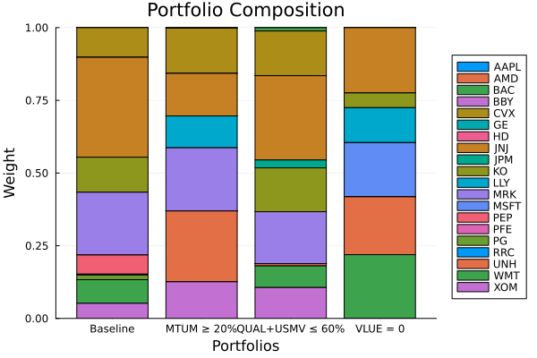

The source files can be found in examples/.
Factor exposure constraints
A mandate is rarely written in tickers. It is written in factors: "at most 10% momentum", "market-neutral to value", "no more than 60% in the defensive factors combined". Those are constraints on the portfolio's factor weights
\[\boldsymbol{w}_f = \mathbf{M}^\intercal \boldsymbol{w}\]
where M is the loadings matrix a factor model already computes. Writing one by hand means fitting the regression yourself, multiplying it out, and pasting twenty coefficients into an equation string — and the moment the loadings are refit, that string describes an exposure the model no longer has.
ExposureConstraintEstimator closes that gap. It decorates whatever the lcse keyword already accepts and declares the AbstractConstraintSpace the rows are written in; FactorSpace is the space that resolves names against the factor axis and re-bases through the prior's loadings. The projection happens while the constraint is being generated, so what reaches the optimiser is an ordinary asset-space LinearConstraint — every optimiser sharing JuMPOptimiser supports one without knowing factors exist. See ADR 0047.
Reach for it whenever the mandate names a factor rather than an asset, and especially under cross-validation or a walk-forward backtest, where the loadings are refit per fold. This is the one constraint that cannot be precomputed by hand without going stale — §7 measures how far off a hand-written row drifts on this very dataset.
using PortfolioOptimisers, CSV, TimeSeries, DataFrames, PrettyTables, Clarabel, StatsPlots, GraphRecipes, LinearAlgebraresfmt = (v, i, j) -> begin return if j == 1 v else isa(v, AbstractFloat) ? "$(round(v*100, digits=3)) %" : v endend;1. Returns and factor data
A factor exposure constraint needs two things a plain mandate does not: factor returns, so the prior can fit a regression, and factor names, so the constraint can be written down. Both come from the same place — prices_to_returns takes an optional second TimeArray of factor prices and records the factor names on the ReturnsResult's nf field.
X = TimeArray(CSV.File(joinpath(@__DIR__, "..", "SP500.csv.gz")); timestamp = :Date)[(end - 252):end]F = TimeArray(CSV.File(joinpath(@__DIR__, "..", "Factors.csv.gz")); timestamp = :Date)[(end - 252):end]rd = prices_to_returns(X, F)slv = Solver(; name = :clarabel, solver = Clarabel.Optimizer, settings = Dict("verbose" => false), check_sol = (; allow_local = true, allow_almost = true))rd.nf5-element Vector{String}:
"MTUM"
"QUAL"
"SIZE"
"USMV"
"VLUE"2. Declaring the factor axis
UniverseSets declares every axis it carries, each under its own key: xkey for assets (default "nx") and tfkey for time-series factors (default "nf"). A cross-sectional factor model names its own axis under cfkey, and factor_axis_key picks the key off the loadings so a caller never states it. The asset axis is required; both factor axes are optional, and a constraint that needs one and does not find it fails at the point of need rather than at construction.
A universe is an ordered declaration. Position is the only link between a name and a column of the data, so a universe listing the right names in the wrong order attaches every constraint to the wrong column and still solves. Both axes are therefore checked against the returns data — name for name, in order — before the prior is even fitted.
sets = UniverseSets(; dict = Dict("nx" => rd.nx, "nf" => rd.nf))UniverseSets
xkey ┼ String: "nx"
uxkey ┼ String: "ux"
tfkey ┼ String: "nf"
utfkey ┼ String: "uf"
cfkey ┼ String: "ncf"
ucfkey ┼ String: "ucf"
zkey ┼ String: "nz"
dict ┴ Dict{String, Vector{String}}: Dict("nx" => ["AAPL", "AMD", "BAC", "BBY", "CVX", "GE", "HD", "JNJ", "JPM", "KO", "LLY", "MRK", "MSFT", "PEP", "PFE", "PG", "RRC", "UNH", "WMT", "XOM"], "nf" => ["MTUM", "QUAL", "SIZE", "USMV", "VLUE"])
3. What the prior carries
A factor exposure constraint is re-based through a regression, so it needs a prior that fits one. FactorPrior does; EmpiricalPrior does not. The loadings live on the prior result's rr field.
Note the loadings used here are rr.M, not rr.L. Under a DimensionReductionRegression the two are the two sides of one projection and each is recoverable from the other, so which one a consumer reads is decided by what it is doing: a risk decomposition (FactorRiskContribution, FactorRiskBudgeting) reads L, the orthogonal reduced basis its covariance was estimated in, while a constraint reads M, because a constraint is written down and only M's columns carry names a user can put in an equation — L's are principal components.
pr = prior(FactorPrior(), rd)size(pr.rr.M)(20, 5)Solving without any constraint gives the baseline exposures, Mᵀw. These are what a mandate is about to move.
opt_base = JuMPOptimiser(; pe = FactorPrior(), slv = slv, sets = sets)res_base = optimise(MeanRisk(; obj = MinimumRisk(), opt = opt_base), rd)exposures(res) = transpose(res.pa.pr.rr.M) * res.wpretty_table(DataFrame("Factor" => rd.nf, "Baseline" => exposures(res_base)); formatters = [resfmt], title = "Baseline factor exposures")Baseline factor exposures
┌────────┬───────────┐
│ Factor │ Baseline │
│ String │ Float64 │
├────────┼───────────┤
│ MTUM │ -6.758 % │
│ QUAL │ -10.798 % │
│ SIZE │ -61.873 % │
│ USMV │ 105.707 % │
│ VLUE │ 47.488 % │
└────────┴───────────┘The portfolio is strongly long low-volatility (USMV) and short size (SIZE) — unsurprising for a minimum-risk allocation — and carries a slightly negative momentum exposure.
4. The one-liner
To require at least 20% momentum, wrap an ordinary LinearConstraintEstimator and declare the space. Everything else — the "name op value" grammar, group expansion, strict handling — is inherited from the estimator being wrapped, because ExposureConstraintEstimator wraps rather than reimplements.
We pass the prior estimator (pe = FactorPrior()) rather than a precomputed prior, and hand rd to optimise. That is what lets the projection be recomputed against whatever loadings the prior actually fits — the point of §7.
ece = ExposureConstraintEstimator(; lce = LinearConstraintEstimator(; val = "MTUM >= 0.2"), space = FactorSpace())res_mtum = optimise(MeanRisk(; obj = MinimumRisk(), opt = JuMPOptimiser(; pe = FactorPrior(), slv = slv, sets = sets, lcse = ece)), rd)pretty_table(DataFrame("Factor" => rd.nf, "Baseline" => exposures(res_base), "MTUM ≥ 20%" => exposures(res_mtum)); formatters = [resfmt], title = "Momentum floor") Momentum floor
┌────────┬───────────┬────────────┐
│ Factor │ Baseline │ MTUM ≥ 20% │
│ String │ Float64 │ Float64 │
├────────┼───────────┼────────────┤
│ MTUM │ -6.758 % │ 20.0 % │
│ QUAL │ -10.798 % │ -35.285 % │
│ SIZE │ -61.873 % │ -48.777 % │
│ USMV │ 105.707 % │ 96.28 % │
│ VLUE │ 47.488 % │ 49.392 % │
└────────┴───────────┴────────────┘MTUM lands exactly on 0.2 — the constraint binds. Nothing downstream of constraint generation knows a re-basis happened: what the optimiser received is a single asset-space row, and it is sitting in the ordinary lcsr slot on the result.
res_mtum.pa.lcsr.ineq.A1×20 transpose(::Matrix{Float64}) with eltype Float64:
-0.0 -0.37705 -0.25362 0.682357 -0.295887 -0.0 0.360435 0.145362 -0.0 0.214574 -0.271698 -0.0 -0.0 0.156436 -0.0 0.251217 -0.0 -0.38072 0.359849 -0.4151395. Factor groups need no machinery
A UniverseSets group is expanded by name and is axis-blind — replace_group_by_assets does not care which axis a name came from. So a factor group is just another key in the same dict, and a constraint over it works with no extra code.
The same blindness has a corollary worth knowing: a factor constraint that names an asset group degrades to unknown-name warnings rather than to an error. It is detectable, not prevented.
sets_grp = UniverseSets(; dict = Dict("nx" => rd.nx, "nf" => rd.nf, "defensive" => ["QUAL", "USMV"]))res_grp = optimise(MeanRisk(; obj = MinimumRisk(), opt = JuMPOptimiser(; pe = FactorPrior(), slv = slv, sets = sets_grp, lcse = ExposureConstraintEstimator(; lce = LinearConstraintEstimator(; val = "defensive <= 0.6"), space = FactorSpace()))), rd)w_grp = exposures(res_grp)pretty_table(DataFrame("Factor" => rd.nf, "Baseline" => exposures(res_base), "QUAL + USMV ≤ 60%" => w_grp); formatters = [resfmt], title = "A factor group") A factor group
┌────────┬───────────┬───────────────────┐
│ Factor │ Baseline │ QUAL + USMV ≤ 60% │
│ String │ Float64 │ Float64 │
├────────┼───────────┼───────────────────┤
│ MTUM │ -6.758 % │ -0.571 % │
│ QUAL │ -10.798 % │ -19.853 % │
│ SIZE │ -61.873 % │ -45.383 % │
│ USMV │ 105.707 % │ 79.853 % │
│ VLUE │ 47.488 % │ 58.588 % │
└────────┴───────────┴───────────────────┘The group sums to exactly the cap:
sum(w_grp[[2, 4]])0.59999912830925846. Market-neutral to a factor
An equality is written the same way. "VLUE == 0" asks for a portfolio with no net value exposure — the "market-neutral to value" mandate, in one string.
res_neutral = optimise(MeanRisk(; obj = MinimumRisk(), opt = JuMPOptimiser(; pe = FactorPrior(), slv = slv, sets = sets, lcse = ExposureConstraintEstimator(; lce = LinearConstraintEstimator(; val = "VLUE == 0"), space = FactorSpace()))), rd)pretty_table(DataFrame("Factor" => rd.nf, "Baseline" => exposures(res_base), "VLUE = 0" => exposures(res_neutral)); formatters = [resfmt], title = "Value-neutral") Value-neutral
┌────────┬───────────┬───────────┐
│ Factor │ Baseline │ VLUE = 0 │
│ String │ Float64 │ Float64 │
├────────┼───────────┼───────────┤
│ MTUM │ -6.758 % │ -1.392 % │
│ QUAL │ -10.798 % │ 16.562 % │
│ SIZE │ -61.873 % │ -39.5 % │
│ USMV │ 105.707 % │ 116.086 % │
│ VLUE │ 47.488 % │ -0.0 % │
└────────┴───────────┴───────────┘7. Why you cannot precompute this by hand
This is the argument for the whole feature, and it is worth measuring rather than asserting.
Split the sample in half. Fit the loadings on the first half, write the momentum cap out by hand as a twenty-term asset-space equation against those loadings, and then solve on the second half — where the prior refits, and the loadings are no longer the ones the equation was written against.
rd_a = ReturnsResult(; nx = rd.nx, X = rd.X[1:126, :], nf = rd.nf, F = rd.F[1:126, :])rd_b = ReturnsResult(; nx = rd.nx, X = rd.X[127:end, :], nf = rd.nf, F = rd.F[127:end, :])pr_a = prior(FactorPrior(), rd_a)pr_b = prior(FactorPrior(), rd_b)# The hand-written row: the first half's momentum loadings, spelled out as an equation.stale_eqn = join(string.(pr_a.rr.M[:, 1]) .* " * " .* rd.nx, " + ") * " <= 0.1"stale = LinearConstraintEstimator(; val = [stale_eqn])live = ExposureConstraintEstimator(; lce = LinearConstraintEstimator(; val = "MTUM <= 0.1"), space = FactorSpace())res_stale = optimise(MeanRisk(; obj = MinimumRisk(), opt = JuMPOptimiser(; pe = FactorPrior(), slv = slv, sets = sets, lcse = stale)), rd_b)res_live = optimise(MeanRisk(; obj = MinimumRisk(), opt = JuMPOptimiser(; pe = FactorPrior(), slv = slv, sets = sets, lcse = live)), rd_b)pretty_table(DataFrame("Row written against" => ["First half's loadings (by hand)", "The prior's own loadings"], "Realised MTUM exposure" => [dot(pr_b.rr.M[:, 1], res_stale.w), dot(pr_b.rr.M[:, 1], res_live.w)], "Cap" => [0.1, 0.1]); formatters = [resfmt], title = "A 10% momentum cap on the second half") A 10% momentum cap on the second half
┌─────────────────────────────────┬────────────────────────┬─────────┐
│ Row written against │ Realised MTUM exposure │ Cap │
│ String │ Float64 │ Float64 │
├─────────────────────────────────┼────────────────────────┼─────────┤
│ First half's loadings (by hand) │ 38.181 % │ 10.0 % │
│ The prior's own loadings │ 10.0 % │ 10.0 % │
└─────────────────────────────────┴────────────────────────┴─────────┘The re-based constraint lands on the cap. The hand-written one does not bind at all — the portfolio it produces carries roughly four times the momentum exposure the mandate asked for, and nothing warned about it, because as far as the optimiser was concerned the row was satisfied.
This is not a contrived split. It is exactly what every fold of a KFold, IndexWalkForward or DateWalkForward scheme does, which is why the estimator route is the default advice: the projection is recomputed inside each fold, with the prior actually in use.
Where the loadings come from: FactorSpace(; re = ...)
Everything above reads the basis off the prior, which is what FactorSpace() means. The space also takes an re field naming the source outright, with the precedence every other factor consumer already uses: a precomputed Regression wins, then the prior's own loadings, then a refit from the returns.
The third arm is the interesting one. It makes a factor mandate legal on a prior that carries no factor block at all — an EmpiricalPrior, say — because the space fits the loadings itself, per fold and per subproblem, from the factor returns already in rd.
re_fit = ExposureConstraintEstimator(; lce = LinearConstraintEstimator(; val = "MTUM <= 0.1"), space = FactorSpace(; re = StepwiseRegression()))res_fit = optimise(MeanRisk(; obj = MinimumRisk(), opt = JuMPOptimiser(; pe = EmpiricalPrior(), slv = slv, sets = sets, lcse = re_fit)), rd_b)# The prior carries no regression: the basis is the space's own refit.isnothing(res_fit.pa.pr.rr)trueMeasured against the loadings the space fitted, the mandate binds exactly as it does on the factor-prior route.
rr_fit = regression(StepwiseRegression(), rd_b)pretty_table(DataFrame("Basis source" => ["`FactorPrior`'s own loadings", "`FactorSpace(; re = StepwiseRegression())`"], "Realised MTUM exposure" => [dot(pr_b.rr.M[:, 1], res_live.w), dot(rr_fit.M[:, 1], res_fit.w)], "Cap" => [0.1, 0.1]); formatters = [resfmt], title = "Reading the basis versus fitting it") Reading the basis versus fitting it
┌────────────────────────────────────────────┬────────────────────────┬─────────┐
│ Basis source │ Realised MTUM exposure │ Cap │
│ String │ Float64 │ Float64 │
├────────────────────────────────────────────┼────────────────────────┼─────────┤
│ `FactorPrior`'s own loadings │ 10.0 % │ 10.0 % │
│ `FactorSpace(; re = StepwiseRegression())` │ 10.0 % │ 10.0 % │
└────────────────────────────────────────────┴────────────────────────┴─────────┘A precomputed re does not refit, and that is the trap §7 just measured, in a supported spelling. FactorSpace(; re = pr_a.rr) pins the basis to the first half's loadings exactly as the hand-written equation did — the row is the right shape for the universe, so nothing can detect that it is stale. Use it when the basis genuinely is fixed, and reach for re = <an estimator> or a TimeDependent schedule on lcse when it is not.
A pinned basis is refused outright at a NestedClustered outer solve, where the asset universe is replaced by cluster names rather than sliced, so no view of the loadings can follow it. An estimator is accepted everywhere, because it refits against whatever universe it is handed.
8. Mixing factor-space and asset-space constraints
The lcse keyword takes a vector, and that vector may mix a re-based constraint with a plain one — the asset frame is simply the absence of a re-basis, spelled by a bare LinearConstraintEstimator. There is deliberately no AssetSpace: it would be a no-op decorator computing bit-for-bit what it wraps.
[ece, lce] promotes to Vector{AbstractConstraintEstimator}, which is wider than the lcse bound and will not be accepted. Write the element type out: PortfolioOptimisers.EcE_LcE_Lc[ece, lce]. The same applies to a mixed vector of plain estimators and precomputed constraints.
mixed = PortfolioOptimisers.EcE_LcE_Lc[ece, LinearConstraintEstimator(; val = "JNJ <= 0.1")]res_mixed = optimise(MeanRisk(; obj = MinimumRisk(), opt = JuMPOptimiser(; pe = FactorPrior(), slv = slv, sets = sets, lcse = mixed)), rd)pretty_table(DataFrame("Constraint" => ["MTUM ≥ 20% (factor space)", "JNJ ≤ 10% (asset space)"], "Realised" => [exposures(res_mixed)[1], res_mixed.w[findfirst(==("JNJ"), rd.nx)]]); formatters = [resfmt], title = "Both hold at once") Both hold at once
┌───────────────────────────┬──────────┐
│ Constraint │ Realised │
│ String │ Float64 │
├───────────────────────────┼──────────┤
│ MTUM ≥ 20% (factor space) │ 20.0 % │
│ JNJ ≤ 10% (asset space) │ 10.0 % │
└───────────────────────────┴──────────┘9. A precomputed constraint can be re-based too
ExposureConstraintEstimator wraps exactly what lcse accepts, which includes an already assembled LinearConstraint. This is the one place where a precomputed constraint is not passed through untouched: it was written in the wrapped basis, so its coefficient matrix is projected wholesale, A * transpose(M). The right-hand side is left alone — a change of basis acts on the row, not on the bound.
Its columns must be factors, not assets, and that is checked rather than assumed, because a precomputed constraint carries no names and nothing else would catch the mistake.
plc = LinearConstraint(; ineq = PartialLinearConstraint(; A = transpose(reshape([1.0, 0, 0, 0, 0], 5, 1)), B = [0.1]))res_pre = optimise(MeanRisk(; obj = MinimumRisk(), opt = JuMPOptimiser(; pe = FactorPrior(), slv = slv, sets = sets, lcse = ExposureConstraintEstimator(; lce = plc, space = FactorSpace()))), rd_b)dot(pr_b.rr.M[:, 1], res_pre.w)0.0999990022546656410. Failure modes
Three of the four checks below happen when the constraint is generated; the fourth happens before the prior is fitted. They are worth reading once, because the diagnoses are close together and the remedies are not.
No regression on the prior
A missing regression always throws, ignoring strict. strict governs unknown names: a per-row, recoverable condition where the offending row is dropped and the rest of the problem is still the problem you described. A missing regression is not that — it makes every row unbuildable, and dropping them silently yields a feasible, plausible-looking portfolio carrying none of the requested exposure.
"Missing" means no carrier holds any, so the remedy is either a prior that computes loadings or a space that supplies them — FactorSpace(; re = ...), above. The message names both.
try optimise(MeanRisk(; obj = MinimumRisk(), opt = JuMPOptimiser(; pe = EmpiricalPrior(), slv = slv, sets = sets, lcse = ece)), rd)catch err errendIsNothingError{String}("a factor exposure constraint is written in factor names and re-based through the regression loadings, so it needs a source for them, and none of the three carriers holds any: the space states none (`space.re === nothing`) and the prior carries none (`rr === nothing`). Unlike an unknown name, this is not recoverable per row and is not governed by `strict`: every row of the constraint would be dropped, leaving a feasible portfolio with none of the requested exposure.\nState the basis on the space instead, `FactorSpace(; re = Regression(; M = ...))` to pin it or `FactorSpace(; re = StepwiseRegression())` to refit it from the returns. No regression was ever computed: wrapping estimators forward `rr` and the factor block `fpr` (ADR 0046), so nesting order does not matter, but nothing in the chain produces loadings (e.g. `EntropyPoolingPrior(; pe = EmpiricalPrior())`). Put an estimator that produces them at the bottom, such as `FactorPrior`.")An unknown factor name
This one is governed by strict: the term is dropped with a warning by default, and throws under strict = true. The message names the axis it searched, so a factor name misspelt as an asset name is distinguishable from the reverse.
sets_small = UniverseSets(; dict = Dict("nx" => ["A", "B", "C"], "nf" => ["F1", "F2"]))rr_small = Regression(; M = [1.0 0.0; 0.5 0.0; 0.0 0.0])try linear_constraints(ExposureConstraintEstimator(; lce = LinearConstraintEstimator(; val = "F3 <= 0.3"), space = FactorSpace()), sets_small; rr = rr_small, strict = true)catch err errendArgumentError("variable `F3` not in factor universe (2 factors under key `nf`); term dropped")A row the loadings annihilate
A re-basis creates a diagnosis the asset frame does not have: every name resolved, and the projection still produced an all-zero row, because no asset loads on the factors named (or a long/short combination's loadings cancelled). An all-zero row is indistinguishable from "no name matched" by inspection, so assembly tracks whether anything matched and reports the two differently — here the remedy is to inspect the loadings, not the spelling.
F2 above is a factor no asset loads on:
try linear_constraints(ExposureConstraintEstimator(; lce = LinearConstraintEstimator(; val = "F2 <= 0.3"), space = FactorSpace()), sets_small; rr = rr_small, strict = true)catch err errendArgumentError("constraint `F2 <= 0.3` resolved against the factor universe (2 factors under key `nf`) but projected to an all-zero row over 3 assets: every matched factor has zero loadings; row dropped")A universe that disagrees with the data
The axis-order check from §2, on the factor side. It runs before the prior is fitted, and only where both sides exist — rd.nf is optional on a ReturnsResult and the factor axis is optional on a UniverseSets, so a plain asset mandate is unaffected.
try optimise(MeanRisk(; obj = MinimumRisk(), opt = JuMPOptimiser(; pe = FactorPrior(), slv = slv, sets = UniverseSets(; dict = Dict("nx" => rd.nx, "nf" => reverse(rd.nf))), lcse = ece)), rd)catch err errendArgumentError("the factor universe declared under key `nf` does not describe the returns data: both have 5 factors but the order differs, first at position 1: `VLUE` vs `MTUM`. Position is the only link between a name and a column, so this attaches constraints, bounds and groups to the wrong factor rather than failing. Set `sets.dict[\"nf\"]` to `rd.nf`, or slice the sets to match the data.")11. What has no factor-space form, and why
ExposureConstraintEstimator decorates lcse and nothing else. It cannot be handed to gcarde or sgcarde, and that is enforced by the type — those keywords admit only the unmarked LinearConstraintEstimator, so an illegal space cannot be written down in the first place. lt/st and wb never took a linear constraint estimator to begin with.
The reason is not a missing feature. A constraint can be re-based if and only if it is a linear form in the weights. Under a change of basis w_b = Pᵀw a row a becomes Pa and nothing else about the problem changes. The boundary is therefore a property of the mechanism: a re-basis rewrites a row and leaves the model alone, so a constraint that reaches the model through its own variables is out of reach even where the factor quantity is perfectly well defined.
- Cardinality (
IntegerPhylogeny,gcarde,sgcarde) and threshold (ThresholdEstimator) rows index the binary held indicators, notw. A projected row is neither integral nor an index into them. "At most 5 factors held" is a different feature — it needs its own binaries — not this one with a flag flipped. - Weight bounds (
WeightBoundsEstimator) are a per-asset box. A factor box,lb ≤ Mᵀw ≤ ub, is a linear constraint and already has a home: write it as two rows throughlcse. - Turnover (
Turnover) and tracking error (TrackingError) are norm forms. Each declares its own auxiliary variables and cones, so it is not a row to rewrite. The factor turnover‖Mᵀ(w - w₀)‖is a real quantity and is not equal to any asset-space turnover — it is re-basable in mathematics, and not by this mechanism. - Fees (
Fees) are priced per traded position: the proportional rates index the long/short weight split, the fixed charges index the MIP indicator bits, and the total is subtracted from the return. A factor is not traded, so there is nothing forMto carry.
The list illustrates the rule rather than exhausting it. The question to ask of a new constraint is not which bullet it matches, but whether the constraint is a row in w — because that is the only thing ExposureConstraintEstimator rewrites.
Tracking a factor already works
One case looks like a gap and is not. ReturnsTracking takes a benchmark return series rather than a benchmark weight vector, and a factor's return series is a column of F. So tracking a factor needs no re-basis at all — pass the column:
TrackingError(; tr = ReturnsTracking(; w = view(rd.F, :, 1)), err = 0.05)The projection is unnecessary here rather than unavailable: the benchmark is already in the factor's own units.
12. Two things to watch
Near Optimal Centering
NearOptimalCentering's default algorithm, UnconstrainedNearOptimalCentering, builds its centering model from weight bounds, budget, risk and return only — it drops linear constraints, for asset-space mandates just as much as for factor ones. A factor mandate written under the default will not hold in the reported weights. Use ConstrainedNearOptimalCentering when the mandate must bind.
res_noc = optimise(NearOptimalCentering(; obj = MinimumRisk(), alg = ConstrainedNearOptimalCentering(), opt = JuMPOptimiser(; pe = FactorPrior(), slv = slv, sets = sets, lcse = ece)), rd)exposures(res_noc)[1]0.19999999841156807The pipeline route pins its projection
An ExposureConstraintEstimator is also a valid bare Pipeline step: it reads the prior slot for its basis and writes an ordinary asset-space LinearConstraint into constraints. The factor names resolve against the axis the pipeline builds from rd.nf, so the axis and the loadings agree by construction and the missing-axis error of §10 cannot occur.
But the rows it produces are pinned to the pipeline's prior. The projection happens once, when the step runs; a downstream optimiser that refits its own prior receives rows computed against the loadings the step saw. That is right only if the optimiser shares that prior. Passing the estimator to the optimiser's lcse field instead — everything above — re-projects it with the prior actually in use, which is why that is the default advice for a factor mandate. It is the same trade-off a phylogeny constraint step already makes.
13. Comparing the mandates
Same data, same objective — only the factor mandate changes.
results = [res_base, res_mtum, res_grp, res_neutral]labels = ["Baseline", "MTUM ≥ 20%", "QUAL+USMV ≤ 60%", "VLUE = 0"]pretty_table(DataFrame(["Factor" => rd.nf, [labels[i] => exposures(results[i]) for i in eachindex(results)]...]); formatters = [resfmt], title = "Factor exposures under each mandate")plot_stacked_bar_composition(results, rd; xticks = (1:length(labels), labels))
This page was generated using Literate.jl.